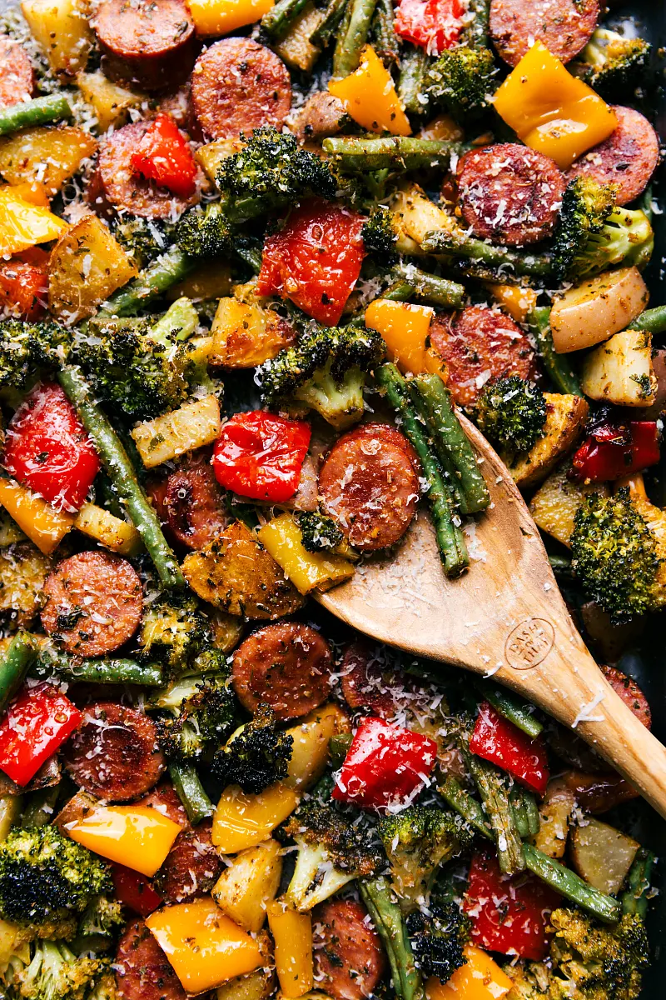

Sheet Pan Sausage and Veggies
This is a quick meal for those busy weekdnights that the whole family will jump for joy over!
Ingredients
- 2 cups (276g) diced baby red potato
- 3 cups (298g) trimmed and halved green beans
- 1 large head of broccoli (2 cups; 137g)
- 1 and 1/2 cups (161g) chopped bell peppers (2 large or 6-7 mini sweet bell peppers)
- 13 ounces (368g) smoked sausage (See Note 1)
- 6 tablespoons (73g) olive oil
- 1/4 teaspoon red pepper flakes, optional (leave out if you don't like heat!)
- 1 teaspoon paprika
- 1/2 teaspoon garlic powder
- 1 tablespoon EACH: dried oregano, dried parsley
- Salt & pepper
- Serve with: fresh parsley, quinoa/rice, lots of freshly grated Parmesan cheese
Instructions
- PREP VEGGIES: It is important to prep the veggies according to directions to ensure
they all cook at the same rate. Wash and chop the unpeeled baby red potatoes. You want
the pieces quite small. I halve the baby potatoes and then dice each half. This yields a
total of 10-12 pieces per potato. Trim the green beans and then cut in half, chop the
broccoli into florets, chop the peppers into 1-inch pieces, and coin the sausage in thick
(1/2-inch) slices.
- OLIVE OIL AND SEASONINGS: Place all the veggies and sausage on the prepared sheet pan. Pour
the olive oil and all the seasonings on top. Season to taste with salt and pepper (I add 1/2
teaspoon of salt and 1/4 teaspoon pepper to start with). Use your hands to toss and evenly coat
all the veggies and sausage with seasonings. Space everything out so it has plenty of space to
cook. If veggies are crammed/overlapping they'll steam instead of roast and will take longer to cook.
- BAKE: Bake 15 minutes, remove from the oven and flip/stir all the veggies around. Return to the
oven and bake for another 10-15 minutes or until vegetables are crisp-tender.
- ENJOY: If desired, sprinkle freshly grated Parmesan cheese over the veggies and sausage as soon as they
come out of the oven. (If you aren't adding the cheese, you'll likely need to add some more salt to the dish.)
Add fresh parsley if desired and enjoy immediately. Serve over cooked rice or quinoa if desired.
Main Page